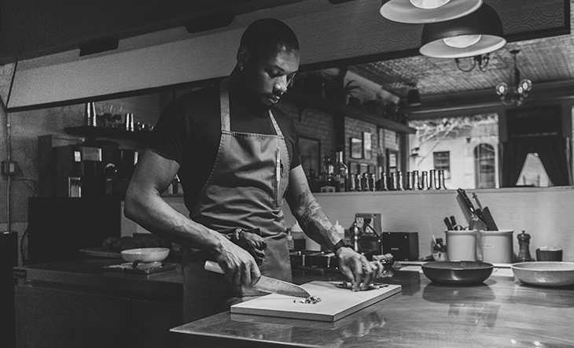

Spaghetti Aglio e Olio
A simple and delicious pasta dish made with garlic, olive oil, and a sprinkle of chili flakes for that perfect kick.

Filet Mignon & Truffle
A tender cut of beef served with a luxurious truffle-infused sauce, complemented by roasted carrots and mashed potatoes.
Clafoutis aux Cerises
A classic French dessert made with fresh cherries baked in a custard-like batter, dusted with powdered sugar.
Pasta e Primavera
A colorful pasta dish made with seasonal vegetables, tossed in a light olive oil dressing, and paired with a fine Chianti wine.
Gelato al Limone
A refreshing lemon gelato made with the finest citrus fruits, offering a tangy and sweet Italian experience.
Saumon à l'Orange
Delicately pan-seared salmon fillet served with a tangy orange sauce.
Panini con Prosciutto
Grilled Italian sandwich filled with fresh mozzarella, prosciutto, and a touch of pesto, served warm and crispy.
Croissant au Beurre
A buttery, flaky croissant, perfect for breakfast or as a light snack, with a cup of freshly brewed espresso.
About Me, A Cook's Passion

Herrington Sinasutra
Living My Childhood's Dream
From a young age, I found myself fascinated by the art of cooking. The kitchen became my playground where I experimented with flavors, textures, and techniques. What started as a simple curiosity soon evolved into a deep passion for creating culinary masterpieces. Over time, this fascination grew into a commitment to master the craft, pushing me to pursue a career in the culinary world. Today, I live my childhood dream every time I step into the kitchen, constantly learning, growing, and sharing my love for food with others.